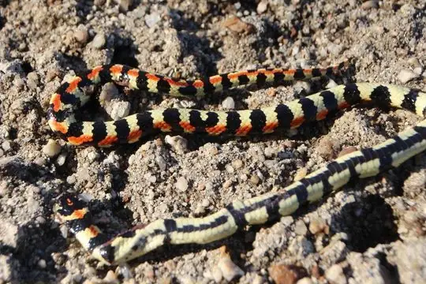
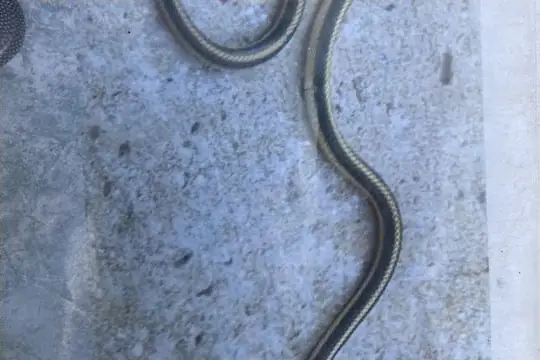

Snakes of Eswatini
57 snake species are recorded in Eswatini in SnakeList: 22 venomous and 35 non-venomous, from 11 families.
- 57species
- 22venomous
- 35non-venomous
- 11families
Species
Showing 57 species
 African Garter SnakeElapsoidea sundevallii
African Garter SnakeElapsoidea sundevallii Aurora House SnakeLamprophis aurora
Aurora House SnakeLamprophis aurora Bibron's Blind SnakeAfrotyphlops bibronii
Bibron's Blind SnakeAfrotyphlops bibronii Bibron's Burrowing AspAtractaspis bibronii
Bibron's Burrowing AspAtractaspis bibronii Black File SnakeGracililima nyassae
Black File SnakeGracililima nyassae Black MambaDendroaspis polylepis
Black MambaDendroaspis polylepis BoomslangDispholidus typus
BoomslangDispholidus typus Boulenger's Garter SnakeElapsoidea boulengeri
Boulenger's Garter SnakeElapsoidea boulengeri Brown House Snake (capensis)Boaedon capensis
Brown House Snake (capensis)Boaedon capensis Brown Water Snake (rufulus)Lycodonomorphus rufulus
Brown Water Snake (rufulus)Lycodonomorphus rufulus Cape Centipede EaterAparallactus capensis
Cape Centipede EaterAparallactus capensis Cape Thread Snake (conjunctus)Leptotyphlops conjunctus
Cape Thread Snake (conjunctus)Leptotyphlops conjunctus Cape Wolf Snake (capense)Lycophidion capense
Cape Wolf Snake (capense)Lycophidion capense Common Egg EaterDasypeltis scabra
Common Egg EaterDasypeltis scabra Common File SnakeLimaformosa capensis
Common File SnakeLimaformosa capensis Common Night AdderCausus rhombeatus
Common Night AdderCausus rhombeatus Common Purple-glossed SnakeAmblyodipsas polylepis
Common Purple-glossed SnakeAmblyodipsas polylepis Common Slug EaterDuberria lutrix
Common Slug EaterDuberria lutrix Cross-barred SnakeDipsadoboa aulica
Cross-barred SnakeDipsadoboa aulica East African Shovel-snoutProsymna stuhlmanni
East African Shovel-snoutProsymna stuhlmanni Floodplain Water SnakeLycodonomorphus obscuriventris
Floodplain Water SnakeLycodonomorphus obscuriventris Green Water SnakePhilothamnus hoplogaster
Green Water SnakePhilothamnus hoplogaster Incognito Thread SnakeLeptotyphlops incognitus
Incognito Thread SnakeLeptotyphlops incognitus Lesser African PythonPython natalensis
Lesser African PythonPython natalensis Lined Shovel-snoutProsymna lineata
Lined Shovel-snoutProsymna lineata Long-tailed Thread SnakeMyriopholis longicauda
Long-tailed Thread SnakeMyriopholis longicauda Montane Grass SnakePsammophis crucifer
Montane Grass SnakePsammophis crucifer Mopane SnakeHemirhagerrhis nototaenia
Mopane SnakeHemirhagerrhis nototaenia Mountain AdderBitis atropos
Mountain AdderBitis atropos Mozambique Spitting CobraNaja mossambica
Mozambique Spitting CobraNaja mossambica Natal Green SnakePhilothamnus natalensis
Natal Green SnakePhilothamnus natalensis Olive House Snake (inornatus)Lycodonomorphus inornatus
Olive House Snake (inornatus)Lycodonomorphus inornatus Olive Whip SnakePsammophis mossambicus
Olive Whip SnakePsammophis mossambicus Peter's Thread SnakeLeptotyphlops scutifrons
Peter's Thread SnakeLeptotyphlops scutifrons Plumbeous Centipede EaterAparallactus lunulatus
Plumbeous Centipede EaterAparallactus lunulatus Puff AdderBitis arietans
Puff AdderBitis arietans Red-lipped SnakeCrotaphopeltis hotamboeia
Red-lipped SnakeCrotaphopeltis hotamboeia Rhombic SkaapstekerPsammophylax rhombeatus
Rhombic SkaapstekerPsammophylax rhombeatus RinghalsHemachatus haemachatus
RinghalsHemachatus haemachatus Schlegel's Giant Blind SnakeAfrotyphlops schlegelii
Schlegel's Giant Blind SnakeAfrotyphlops schlegelii Semiornate Smooth SnakeMeizodon semiornatus
Semiornate Smooth SnakeMeizodon semiornatus Short-snouted Grass SnakePsammophis brevirostris
Short-snouted Grass SnakePsammophis brevirostris Snouted CobraNaja annulifera
Snouted CobraNaja annulifera Snouted Night AdderCausus defilippii
Snouted Night AdderCausus defilippii Southern Brown Egg EaterDasypeltis inornata
Southern Brown Egg EaterDasypeltis inornata Spotted Bush SnakePhilothamnus semivariegatus
Spotted Bush SnakePhilothamnus semivariegatus
Spotted Harlequin SnakeHomoroselaps lacteus- No photo yetSpotted House SnakeLamprophis guttatus
 Stripe-bellied Sand SnakePsammophis subtaeniatus
Stripe-bellied Sand SnakePsammophis subtaeniatus
Striped Harlequin SnakeHomoroselaps dorsalis Swazi Rock SnakeInyoka swazicus
Swazi Rock SnakeInyoka swazicus- No photo yetTello's Thread SnakeLeptotyphlops telloi
 Tiger Cat SnakeTelescopus semiannulatus
Tiger Cat SnakeTelescopus semiannulatus Twig SnakeThelotornis capensis
Twig SnakeThelotornis capensis Variegated Wolf SnakeLycophidion variegatum
Variegated Wolf SnakeLycophidion variegatum Western Natal Green SnakePhilothamnus occidentalis
Western Natal Green SnakePhilothamnus occidentalis Yellow-bellied House SnakeLamprophis fuscus
Yellow-bellied House SnakeLamprophis fuscus
No snakes in Eswatini match.
Eswatini’s snakes in numbers
- Families: Colubridae 12, Lamprophiidae 12, Atractaspididae 6, Elapidae 6, Psammophiidae 6, Leptotyphlopidae 5, Viperidae 4, Prosymnidae 2, Typhlopidae 2, Pseudoxyrhophiidae 1, Pythonidae 1.